I have been working on a variety of research topics, ranging from stochastic control and information (belief) space planning, to simultaneous localization and mapping for mobile robots, robot vision, cooperative planning, and rescue robotics. Traditionally, the perception and estimation modules serve the controller by providing an estimate of the system’s state. I am interested in methods where the controller serves back the perception and estimation modules by taking the available information in the environment into account. This often can be formulated as a planning problem in the information space. As a result, the controller takes the system’s state toward goal while taking maneuvers that steer the sensory information to improve perception, localization, and mapping accuracy, and hence achieve safer robot navigation.
With the advancement of mobile processors’ computational power, development of highly integrated processors for robotics applications has gained attention. Qualcomm Snapdragon Flight, is a highly efficient development platform with a very small form factor designed to help manufacturers build the future of consumer robots and drones. One of the key components for consumer robots is 6D trackingv (oistion and orientation). This is achieved using a very robust and efficient Visual-Inertial-Odometry that is highly optimized to fit to various application areas. During my time I started Qualcomm’s efforts on quadcopter autonomy and planning under uncertainty. My team successfully designed and implemented the full navigation stack on Qualcomm Snapdragon flight board. The navigation stack included Visual-Inertial Odometry (VIO), 3D reconstruction module based on data from stereo cameras, and motion planning under uncertainty. The research led to the first fully autonomous flight with all computation on a single board weighing less than 13 grams with size 58x40mm. We showcased the flight at consumer Electronics show in Jan’16. After this project.
Navigation and Mapping
Qualcomm Research’s Visual-Inertial Odometry (VIO)
Snapdragon Flight robotics platform
Long-term operations of resource-constrained robots typically require hard decisions be made about which data to process and/or retain. The question then arises of how to choose which data is most useful to keep to achieve the task at hand. As spatial scale grows, the size of the map will grow without bound, and as temporal scale grows, the number of measurements will grow without bound. In this work, we present the first known approach to tackle both of these issues. The approach has two stages. First, a subset of the variables (focused variables) is selected that are most useful for a particular task. Second, a task-agnostic and principled method (focused inference) is proposed to select a subset of the measurements that maximizes the information over the focused variables. The approach is then applied to the specific task of robot navigation in an obstacle-laden environment. A landmark selection method is proposed to minimize the probability of collision and then select the set of measurements that best localizes those landmarks. It is shown (in simulation and on physical systems) that the two-stage approach outperforms both only selecting measurement and only selecting landmarks in terms of minimizing the probability of collision.
The focus of this work is on solving multi-robot planning problems in continuous spaces with partial observability. Decentralized Partially Observable Markov Decision Processes (Dec-POMDPs) are general models for multi-robot coordination problems, but representing and solving Dec-POMDPs is often intractable for large problems. To allow for a high-level representation that is natural for multi-robot problems and scalable to large discrete and continuous problems, this paper extends the Dec-POMDP model to the Decentralized Partially Observable Semi-Markov Decision Process (Dec-POSMDP). The Dec-POSMDP formulation allows asynchronous decision-making by the robots, which is crucial in multi-robot domains. We also present an algorithm for solving this Dec-POSMDP which is much more scalable than previous methods since it can incorporate closed-loop belief space macro-actions in planning. These macro-actions are automatically constructed to produce robust solutions. The proposed method’s performance is evaluated on a complex multi-robot package delivery problem under uncertainty, showing that our approach can naturally represent multi-robot problems and provide high-quality solutions for large-scale problems.
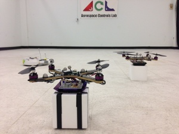
Currently there is a desire for the use of quadcopters in persistent missions. Unfortunately, these vehicles commonly face battery and fuel degradation issues. This work centers on development of a planner for long-endurance robotics missions that necessitate health (system’s correct functionality) management in partially observable Markov decision processes (POMDP). Specifically, we focus on the computational problem involving the extended endurance of quadrotors implemented for package delivery. To handle uncertainties in the real world applications (such as wind, measurement noise, etc) we plan in the space of probability distributions over both the vehicle-level and mission-level states. The former consideration includes parameters like vehicle location while the latter involves vehicular health and capabilities. We reduce online planning for mission-level states, performed by forward tree searches in the space of probability distributions, by utilizing the information roadmaps. In doing so, we enable the quadrotors to take preventive measures (such as going to a recharge/repair station) during their missions to preserve their health. We have proposed novel algorithms and a corresponding framework, presenting simulation results for dynamic health and partial observability in a persistent payload delivery mission with limited fuel.
Hardware-in-the-loop experiments are an essential step for transitioning implementation of planning and learning algorithms from simulations to real systems. During execution of algorithms, the planner/learner manipulates numerous latent variables such as probability distributions over state of the system and environment, predicted robot trajectories and transition probabilities. In this work, we describe a new visualization system that consists of multiple projectors and a real-time animation software that is tailored towards presenting the belief space of multi-agent planning and learning algorithms. We have implemented the visualization system in Aerospace Controls Lab’s RAVEN indoor flight testbed at MIT. This system utilizes 18 Vicon motion-capture cameras tracking multiple heterogeneous robotic vehicle platforms. State and latent information for the vehicles are published using ROS (Robot Operating System), allowing a computer dedicated to visualization-rendering to package this information in an intuitive format for designers and spectators. The visualization is then projected onto the experiment area, with latent data and physical systems being run synchronously. This allows designers and spectators to observe hardware while simultaneously gaining an intuitive understanding of underlying decisions made by the algorithm.
Multi-robot (aerial & ground) coordination
RRT based path planning (VIO)
Forest Fire Management
Multi-robot Path Planning
We have devised a principled way of real-time replanning in belief space via realization of the rollout policy based on the FIRM framework. This video demonstrates the performance of the method on physical mobile robots over a long (about 25 minutes) and complex run. In this run, we investigate how such a real-time replanning method can generate a feedback plan that is robust to discrepancies between real models and computational models as well as robust to changes in the environment, failures in the sensory system, and large deviations from the nominal plan. We believe these framework lay the ground work for further advancing the theoretical POMDP framework toward practical applications, and achieving long-term autonomy in robotic systems.
Information RoadMap (IRM) is the first/only multi-query roadmap (graph) in the belief space (information space), i.e., the space of all possible probability distribution over the system state. Since it is a multi-query graph, IRM makes it possible to dynamically re-plan in real-time, in case of large deviations. In this video each FIRM node (Gaussian pdf) is shown by a blue mean and black covariance. The system belief is shown by red mean and covariance. The true system (unknown) is shown in green. When the true state (green) is pushed away from its nominal plan, IRM can replan in real-time by putting a new node and locally connecting it to the neighboring nodes, while the rest of graph remains unchanged.
Robust motion planning in belief space Aliagha4
Video without annotations
FIRM is a sampling-based framework for motion planning under uncertainty. It takes into account both process (motion) uncertainty and sensing uncertainty. It relies on “stabilizers” that drive the system belief (posterior distribution of the filter) to predefined beliefs (FIRM nodes). This stabilization leads to desirable features such as robustness, reliability, and scalability. In this video the FIRM nodes (Gaussian distributions) are shown by a blue mean and black covariance. The system belief is shown by red mean and covariance. The true system (unknown) is shown in green. The closer the robot is to information sources (black stars) the less sensing uncertainty. Based on the FIRM plan, the robot detours from the shortest path to a more informative path on which the filter and the controller work better and can minimize the collision probability. We have designed different varaints of FIRM for linearly stabilizable systems, [paper], non-holonomic systems, [paper], and non-stoppable systems, [paper].
Motion planning using FIRM Aliagha4
Video without annotations
Stochastic cooperative planning under uncertainty aims at exploiting capabilities of the different (possibly heterogeneous) agents in a team to increase the chance of successfully performing a given task under uncertainty. In this video the goal is to reach a final team configuration, while minimizing the collision probability. There are tree robots, whose Gaussian belief (state pdf) is shown. The red robot has access to a GPS and two other robots can only measure their relative positions with respect to the red robot. However, the closer the robots, the less the measurement uncertainty. Using information roadmaps for cooperative control, the emergent behavior is interesting: the red robot detours from its shortest path and helps the other robots to shrink their uncertainty and reach the goal configuration with a minimum collision probability.
Fokker-Planck-Kolmogorov Equation (FPKE) is a parabolic partial differential equation that lies at the heart of the uncertainty propagation problem and nonlinear filtering because it captures the exact description of evolution of the state probability density function (pdf) through continuous dynamical systems. I worked on solving this equation numerically based on Finite Element Methods (FEM) using dealii package. This video shows the evolution of the system pdf through the 2D stochastic nonlinear Duffing oscillator system. As expected, the pdf converges to its bimodal non-Gaussian stationary distribution.
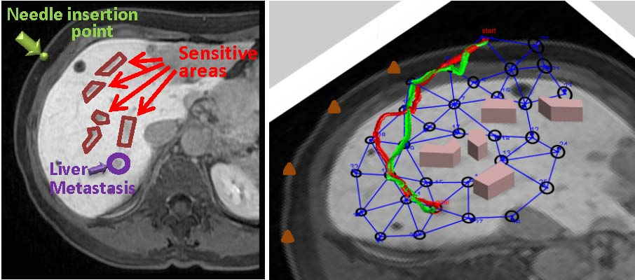
Robot-assisted medical procedures, such as medical needle steering, require safe and accurate motions. Information RoadMaps (IRM) seamlessly incorporate the constraints into the control problem and thus the planner can find a feedback that minimizes the probability of collision with sensitive regions in tissue. The left figure shows a Gd-EOB-DTPA–enhanced 3D gradient-echo MRI of a 64-y-old patient with liver metastases due to breast cancer. The right figure shows results of two sample runs using IRM. Due to the feedback nature of the solution, the path is determined at run-time based on the tissue deformation and sensing noise. [poster]
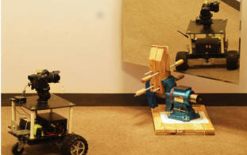
We devised a method for the detection and recognition of a large planar mirror based on the images captured by a monocular camera. We derive a mirror transformation matrix in a homogeneous coordinate and geometric constraints for corresponding real and virtual feature points in the image. We find that existing feature detection methods are not reflection invariant. We introduce a secondary artificial reflection to virtual features to generate secondary features which are proven to share a rigid body motion relationship with the original feature set. Finally, we propose an iterative strategy to adjust the secondary mirror configuration so that existing feature matching methods can be used. The combined method yields a robust mirror detection algorithm which has been verified in physical experiments. [paper]
I was a member of Resquake robotics group, at KN Toosi University of Technology, from 2006 to 2008. The core team members were Ehsan Mihankhah, Arash Kalantari, Ehsan Aboosaeidan, Hesam Semsarilar, and Ali Jazayeri, experts in rescue robotics. The team won many prizes in national and international rescue robotics contests. Resquake built different tele-operated and autonomous robots, and my responsibility in this group was designing algorithms for Autonomous Navigation and SLAM in rescue environments, for the autonomous robot.
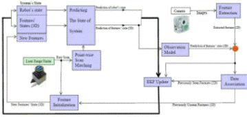
Fusing the information of a monocular camera and range scanners for SLAM in mobile robots.
This project is concerned with the feature extraction and data associations algorithms in dealing with laser range finders. The proposed method uses global information of the whole scan data and local information around feature points to perform data association.
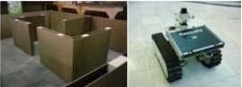
Robot and the environment
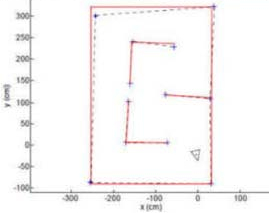
Map
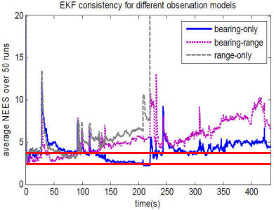
This work is concerned with the consistency analysis and aims to improve the process consistency while reducing the computational cost.
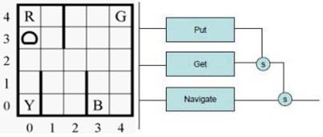
Hierarchical reinforcement learning attempts to cope with “curse of dimensionality” by decomposing the state space to the simpler parts. In this work, we decompose the tasks to simpler behaviors, which are connected to each other in a subsumption architecture. Methods for updating the value functions, credit assignment, and structure learning are studied in the proposed framework.
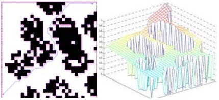
In this project, we were using Hopfield Artificial Neural Networks (ANNs) to find a path from start point to destination, in the presence of obstacles. The method is based on energy propagation concepts through neurons of the recurrent Hopfield network to build a surface, whose maximum gradient at every point guides the robot toward the goal point in an efficient way.
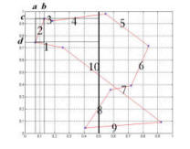
Solving Traveling Salesman Person problem (TSP) using Ant Colony System-based optimization (ACO) through adding a local optimizer.
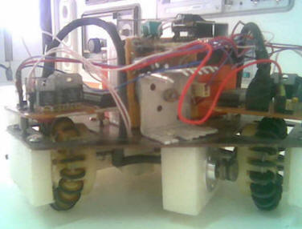
This cool project was my second serious project in robotics in my undergraduate studies. We were a team of 8 junior or senior students, building small-size soccer robots for Robocup competitions. I was the leader of this team during 2003-2005, before I leave Tabriz University for my graduate studies.
I refer you to e\eqref{eq:one}. Questions of interest include: (i),
\(\mathbf{X}_{n,p} = \mathbf{A}_{n,k} \mathbf{B}_{k,p} \) How does the Mott state collapse upon doping and how \( sin(x^2) \) is this related to the complex phase diagram of high-temperature superconductors? (ii), What is the strange metal phase seen in correlated electron systems? Is this an exotic long-range entangled state? What is the mechanism of dissipation in that state? (iii), Why is the transition temperature in high-temperature superconductors so high?